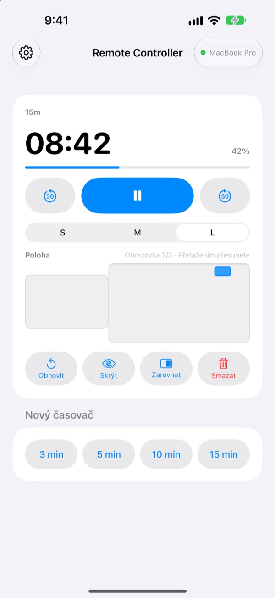
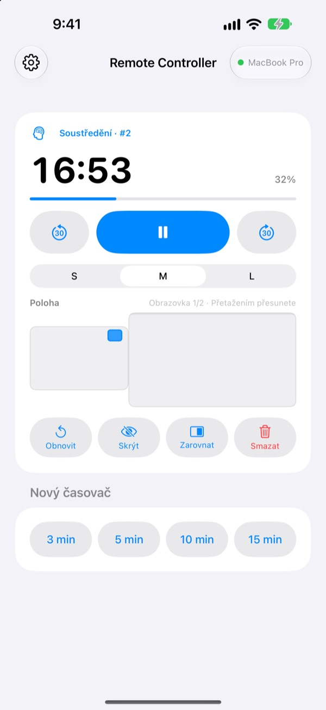
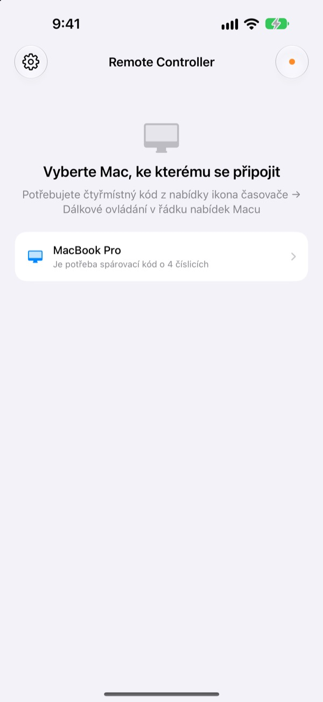

Mac zůstane vzadu,
časovač máte v ruce
Ovládejte časovače StickyPresenter na Macu z iPhonu. Vyjděte dopředu k publiku a pořád vidíte zbývající čas, pozastavíte, přidáte 30 sekund nebo odsunete časovač z grafu, který zakrývá.
Zdarma · iOS 17 nebo novější · Potřebujete Mac se spuštěným StickyPresenter ve stejné Wi‑Fi.

Pořád chodíte k notebooku kvůli časovači?
Přednáška se protahuje a potřebujete víc času. Časovač leží přesně přes váš nejlepší graf. Dosud to znamenalo přejít přes pódium a před všemi sáhnout po trackpadu. S Remote Controller zůstanete stát, kde jste, a jednou klepnete na iPhone.
Vidíte zbývající čas a hned ho upravíte
Zbývající čas a průběh se mění každou sekundu. U Pomodora navíc vidíte, jestli běží Soustředění, nebo Pauza, a kolikátý je to cyklus.
Protahuje se to? Přidejte 30 sekund. Končíte dřív? Uberte 30. Nový časovač na 3, 5, 10 nebo 15 minut spustíte jedním klepnutím a velikost widgetu přepnete mezi S, M a L, aby ho přečetla i zadní řada.

Kód zadáte jednou a máte hotovo
Po otevření aplikace se v seznamu objeví každý Mac ve vaší Wi‑Fi, na kterém běží StickyPresenter. Vyberte svůj a zadejte čtyřmístný kód z nabídky ikona časovače ▸ Dálkové ovládání v řádku nabídek Macu.
Příště se aplikace k tomuto Macu připojí sama, kdykoli ji otevřete. Žádný účet, žádný server: obě zařízení komunikují přímo v místní síti.

Tři kroky a jedete
- 1
Spusťte StickyPresenter na Macu
Když je v řádku nabídek ikona časovače, máte připraveno. Aplikace tam zůstává, i když zavřete všechna okna.
- 2
Otevřete aplikaci ve stejné Wi‑Fi
Až se zeptá na přístup k místní síti, klepněte na Povolit. Jen tak váš Mac najde.
- 3
Vyberte Mac a zadejte kód
Zadejte čtyřmístný spárovací kód z nabídky ikona časovače ▸ Dálkové ovládání v řádku nabídek Macu a časovač máte pod kontrolou.
Co ovládáte z iPhonu
- Zbývající čas
- Zbývající čas, průběh, fáze Pomodora (Soustředění nebo Pauza) a číslo cyklu, každou sekundu
- Spustit · Pozastavit
- Jedno velké tlačítko uprostřed
- −30 s · +30 s
- Tlačítka po stranách hned upraví běžící časovač
- Nový časovač
- 3, 5, 10 nebo 15 minut
- Velikost widgetu
- Widget ve velikosti S, M nebo L
- Poloha
- Přetahujte widget po zmenšeném rozložení obrazovek Macu, i na rozšířený displej
- Skrýt
- Na chvíli schováte widget před publikem
- Zarovnat
- Ztracený widget vrátíte vedle okna časovače
- Obnovit · Smazat
- Spustíte časovač od začátku, nebo ho odstraníte
- Zkratky · Siri
- Řekněte
Spustit časovač pomocí Remote Controllera na Macu se objeví časovač
Dálkové ovládání pracuje jen s časovači, které běží na Macu. Poznámky a texty pro teleprompter se do iPhonu nikdy neposílají a přepínat snímky neumí.
Otázky
Můžu aplikaci na iPhonu používat samostatně?
Ne. Remote Controller je dálkové ovládání pro StickyPresenter na Macu, takže StickyPresenter musí běžet na Macu ve stejné Wi‑Fi. Aplikaci pro Mac stáhnete z odkazu níže nebo přes Stáhnout aplikaci pro Mac v Nastavení aplikace.
Můj Mac se v seznamu neobjevuje.
Pokud se do 10 sekund žádný Mac neobjeví, aplikace ukáže kontrolní seznam. Projděte ho odshora: StickyPresenter běží na Macu (v řádku nabídek je ikona časovače), obě zařízení jsou ve stejné Wi‑Fi (síť pro hosty nefunguje), Remote Controller je na iPhonu zapnutý v Nastavení ▸ Soukromí a zabezpečení ▸ Místní síť, StickyPresenter je na Macu povolený v Nastavení systému ▸ Soukromí a zabezpečení ▸ Místní síť a VPN je vypnutá.
Aplikace hlásí nesprávný spárovací kód.
Zadejte čtyři číslice, které se právě teď zobrazují v nabídce ikona časovače ▸ Dálkové ovládání v řádku nabídek Macu. Pokud někdo na Macu klikl na Nový spárovací kód, platí už jen nový kód.
Aplikace hlásí, že Mac tento iPhone nezná.
To se stane po volbě Zapomenout spárovaná ovládání na Macu nebo po přeinstalaci StickyPresenter. Klepněte na Mac v seznamu a zadejte spárovací kód ještě jednou.
Aplikace hlásí, že Mac neodpovídá.
Zkontrolujte, že Mac není v režimu spánku, obě zařízení jsou ve stejné Wi‑Fi a VPN je vypnutá.
Aplikace hlásí, že aplikaci na Macu je třeba aktualizovat.
StickyPresenter na Macu je starší než dálkové ovládání. Aktualizujte ho v Mac App Store a pak Mac vyberte znovu.
Je to bezpečné v zasedačce plné Maců?
Ano. Ovladač mluví jen s tím jedním Macem, se kterým je spárovaný, a ovladač, který nezná váš kód, se k vašemu Macu nedostane. Vše putuje šifrovaným přímým spojením ve stejné síti. Pokud jste kód někdy někomu ukázali, klikněte na Macu na Nový spárovací kód.
Co odchází do internetu?
Časovače a příkazy nikdy neopustí místní síť. Do internetu jdou jen anonymní statistiky používání, hlášení o pádech a zpětná vazba, kterou se sami rozhodnete poslat. Podrobnosti najdete v zásadách ochrany soukromí.
Spustí Siri časovač těsně předtím, než jdu na řadu?
Ano. Řekněte „Spustit časovač pomocí Remote Controller“, nebo použijte akci Spustit časovač na Macu v aplikaci Zkratky. Aplikace se otevře a jakmile se připojí k Macu, spustí časovač zvolené délky (1 až 600 minut).
Dotazy, chyby nebo nápady? Pište na mizzking75@gmail.com, nebo je pošlete rovnou z iPhonu přes ozubené kolečko vlevo nahoře v aplikaci ▸ Zpětná vazba.